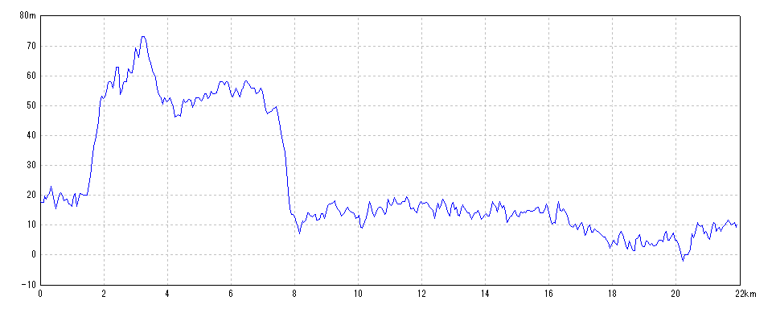
| 開始日時 | 2026/06/05 07:10:57 | 終了日時 | 2026/06/05 10:51:33 |
| 水平距離 | 21.90km | 沿面距離 | 21.95km |
| 経過時間 | 3時間40分36秒 | 移動時間 | 3時間22分34秒 |
| 全体平均速度 | 5.97km/h | 移動平均速度 | 6.48km/h |
| 最高速度 | 10.81km/h | 昇降量合計 | 449m |
| 総上昇量 | 221m | 総下降量 | 228m |
| 最高高度 | 74m | 最低高度 | -4m |
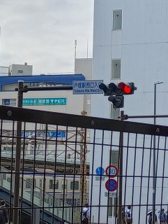
2026/06/05 07:08:51
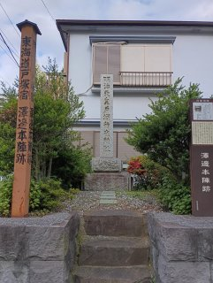
2026/06/05 07:19:20
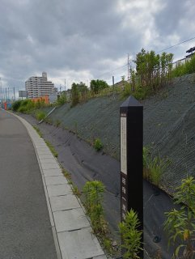
2026/06/05 07:46:20
今は何もない、、、
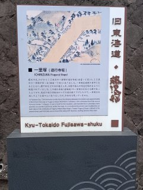
2026/06/05 08:21:35
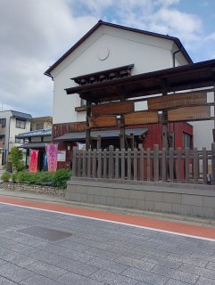
2026/06/05 08:28:36
ゴール後に見学
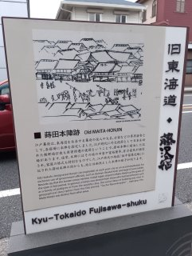
2026/06/05 08:37:09
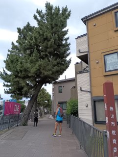
2026/06/05 09:14:37
この斜めの木が一里塚の木？
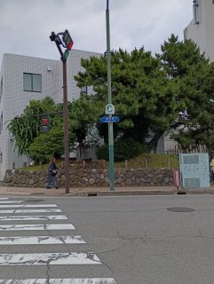
2026/06/05 09:52:02
ここは立派な松が残っていた
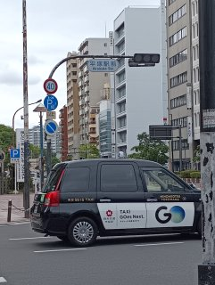
2026/06/05 10:49:52
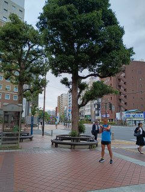
2026/06/05 10:51:15